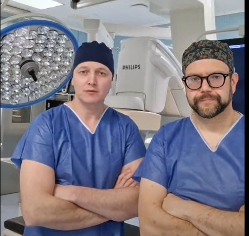

O projekcie
Autorzy

Zdjęcie zespołu — wkrótce
Instytucje
Regionalny Szpital Specjalistyczny im. dr. W. BiegańskiegoGrudziądz · ośrodek kliniczny (kardiochirurgia)
KROK — Krajowy Rejestr Operacji KardiochirurgicznychŹródło danych (2012–2024)
Politechnika Bydgoska — Wydział MedycznyPartner akademicki
Polskie Towarzystwo Kardio-TorakochirurgiczneTowarzystwo naukowe (PTKT)